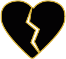

Em caso de empate, o jogador, entre os empatados, com a carta de menor valor no Líder será o alvo. Caso continue o empate, o alvo é decidido pelo jogador da ação.
Cartas do Tipo Permanente e Turno vão para o Campo do alvo.
Cartas Secretas ou Reativas sendo jogadas sem ação não precisam ser votadas.
A pessoa votada pela a ação da Traidora deve entregar uma carta para repor quem jogou.

Na Traidora Avançada, a pessoa votada é eliminada e quem jogou a carta deve puxar novamente.
A ação dos Zumbis também é votada pela mesa.
Alvos protegidos não podem ser votados.
Modo Duo:
Jogando em dupla, você não pode votar em sua dupla para ser alvo de uma carta, mesmo que seja boa.